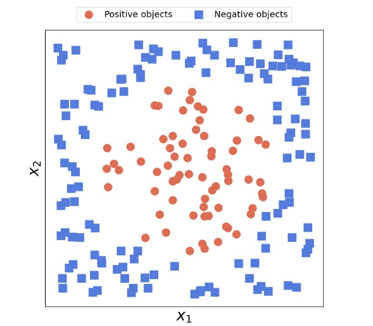

Perception算法
Perception 也是一种用来解决二分类问题的算法。它的具体形式也很直观——
$$
h_\theta(x) = g(\theta^Tx) \ \
g(z) = \begin{cases}
1, & z \ge 0 \
0, & z < 0
\end{cases}
$$
$g(z)$ 函数的表示形式比较符合我们的直觉：当 $z \ge 0$ ，即 $\theta^Tx \ge 0$ 的时候，直接将 x 分到某一类（用 1 表示），直接令 $y = g(z) = 1$ ；反之将 x 分到另外一类 ，直接令 $y = g(z) = 0$。
类似于求解Logistic回归的损失函数的过程，我们可以通过极大似然估计得到 Perception 算法的损失函数（过程和结果和Logistic是一样的）
$$
J(\theta) = \sum_{i=1}^m - \ y^{(i)} \cdot \log(h_\theta(x^{(i)})) - (1 - y^{(i)}) \cdot \log(1 - h_\theta(x^{(i)}))
$$
定义好损失函数，我们就可以采用梯度下降求解参数。
$$
\begin{aligned}
\theta_j := \theta_j - \alpha \frac{\partial \ J(\theta)}{\partial\ \theta_j} = \theta_j - \alpha \sum_{i=1}^m (h_\theta(x ^{(i)}) - y^{(i)}) \cdot x_j^{(i)}
\end{aligned}
$$
因为 $g(z)$ 的表示十分简洁并且符合直觉，所以 Perception算法求解有很好的的几何解释，具体可以看课程视频对应部分。但是， Perception 缺乏概率解释，这是它没有得到广泛应用的原因之一。
此外，Perception 还有一个明显缺点——它只能处理线性可分的数据集。对于线性不可分的数据集，Perception算法将无法收敛。比如下面这个图就不是线性可分的。
指数族（The exponential family）
指数族的定义
如果一个分布能用下面的方式写出来，我们就说这个分布属于指数族
$$
P(y;\eta) = b(y) \cdot \exp(\eta^TT(y) - a(\eta))
$$
现在简要介绍以下公式中的参数：
-
$y$ 是研究的数据
-
$\eta$ 是自然参数（natural parameter），也叫典范参数（canonical parameter）。
-
$T(y)$ 叫做充分统计量（sufficient statistic），在这里我们可以认为$T(y) = y$。
-
$a(\eta)$ 叫做对数分割函数（log partition function），它与数据 $y$ 无关。$\exp(-a(\eta))$主要起“归一化”的作用。
-
$b(y)$ 叫做基础度量（base measure），只与数据 $y$ 有关，与自然参数 $\eta$ 无关。
其中，$T(y), a(\eta), b(y)$ 是可以根据我们的需求任意选择的。对于一组固定的$T(y), a(\eta), b(y)$ ，就得到了一个由 $\eta$ 参数化的一组分布。通过改变$\eta$ ，我们就可以得到该组分布中的不同特定分布了。
举例说明
我们学过的伯努利分布、高斯分布、泊松分布等都属于指数族。
伯努利分布（Bernoulli）
对于伯努利分布，我们熟知的表示形式为
$$
P(y; \phi) = \phi^y(1-\phi)^{1-y}
$$
我们可以对其进行变换
$$
\begin{aligned}
P(y; \phi) &= \phi^y(1-\phi)^{1-y} \
&= \exp(\log(\phi^y(1-\phi)^{1-y})) \
&= \exp(y\cdot \log(\phi) + (1-y) \cdot(1-\log(\phi))) \
&= \exp(y \cdot \log(\frac{\phi}{1 - \phi}) + \log(1 - \phi))
\end{aligned}
$$
很显然，这符合指数族的定义。其中：
-
$\eta = \log(\frac{\phi}{1-\phi})$，即 $\phi = \frac{1}{1 + e^{-\eta}}$
-
$T(y) = y$
-
$a(\eta) = -\log(1 - \phi) = \log(1 + e^\eta)$
-
$b(y) = 1$
高斯分布（Gaussian）
对于高斯分布，我们熟知的表示形式为
$$
P(y; \mu, \sigma^2) = \frac{1}{\sqrt{2\pi} \sigma} \exp (-\frac{(y-\mu)^2}{2 \sigma^2})
$$
当$\sigma$ 固定，比如$\sigma = 1$ 时，高斯分布也是属于指数族的。我们通过下面的推导证明：
$$
\begin{aligned}
P(y; \mu, 1) &= \frac{1}{\sqrt{2\pi}} \exp (-\frac{(y-\mu)^2}{2}) \
&= \frac{1}{\sqrt{2\pi}} e^{-\frac{y^2}{2}}\exp(\mu y - \frac{1}{2} \mu^2) \
\end{aligned}
$$
很显然，这符合指数族的定义。其中：
-
$\eta = \mu$
-
$T(y) = y$
-
$a(\eta) = \frac{1}{2} \mu^2$
-
$b(y) = \frac{1}{\sqrt{2\pi}} e^{-\frac{y^2}{2}}$
指数族的性质
-
对于指数族中的某一组分布$p(y;\eta)$，关于$\eta$ 的极大似然估计（MLE）是凹优化的，即$\eta$ 的负对数似然（NLL）是凸优化的。
-
概率分布 $p(y;\eta)$ 的期望$E(y;h)$满足:
$$
E(y;h) = \frac{\partial \ a(\eta)}{\partial\ \eta}
$$
方差$Var(y;\eta)$ 满足:
$$
Var(y;\eta) = \frac{\partial^2 \ a(\eta)}{\partial\ \eta^2}
$$
广义线性模型（GLM）
广义线性模型（GLM）是上面提到的指数族的自然延伸。我们前面学到的线性回归和 Logistic 回归都可以通过广义线性模型导出。
GLM的三个假设
-
$y \mid x;\theta \sim \tt{Exponential \ Family}$
-
$\eta = \theta^Tx;\ (\theta \in \mathbb{R}^n, \ x \in \mathbb{R}^n)$ 这条假设被称为设计选择（design choice）
-
给定一个$x$，如果想要对 $y$ 的值进行预测，则 $y$ 的预测值为" $ y \mid x ; \theta$ " 的期望，即$E(y\mid x; \theta)$。因此，当我们使用 GLM 进行预测时，$h_\theta(x)$可以写作：
$$
h_\theta(x) = E(y \mid x ;\theta)
$$
GLM的训练和预测
通过上述假设可以看出，GLM 的参数是$\theta$ 。因此训练目标就是“根据训练数据找到最合适的$\theta$” ，而预测目标就是“根据训练好的$\theta$ 针对指定的$x$ 进行预测”。
GML的训练和预测过程如下图所示：

-
预测时，直接让$x$与训练好的$\theta$ 进行点积运算，得到$\eta$，输入到指数族中，对应的期望即为 $y$ 的预测值。
-
训练时，可以直接根据最大似然估计找到损失函数，并利用梯度下降算法对$\theta$ 进行求解。（这里我们采用的是随机梯度下降）
$$
\begin{aligned}
\theta_j := \theta_j - \alpha \cdot(h_\theta(x ^{(i)}) - y^{(i)}) \cdot x_j^{(i)}
\end{aligned}
$$当然，我们也可以进行梯度上升
$$
\begin{aligned}
\theta_j := \theta_j + \alpha \cdot(y^{(i)} - h_\theta(x ^{(i)})) \cdot x_j^{(i)}
\end{aligned}
$$
看上去仅仅是做了一个简单的数学变换，但是实际上我们这里的目标是“极大化似然函数”，而上面的梯度下降是“极小化损失函数”。
GLM 中的几个重要术语
-
$\eta$ 被称为自然参数（natural parameter）
-
$\mu =E(y;\eta) = g(\eta)$ 被称为规范响应函数（cannonical response function）。主要用于根据自然参数$\eta$ 得到均值 $\mu$ ，也就是 $y$ 的预测值。
-
$\eta = g^{-1}(\mu)$ 被称为规范连接函数（canonical link function）。主要用于根据均值 $\mu$ 得到自然参数 $\eta$ 。
GLM 的三类参数
GLM中涉及三类参数：
-
首先最直接的是模型参数 $\theta$，也就是我们通过训练求解的参数。（Model Parameter）
-
其次是指数族中的自然参数$\eta$， 它等于$\theta^T x$。（Natural Parameter）
-
最后是某个具体分布的参数（Cannonical Parameter）
-
如果我们从指数族中选择伯努利分布$P(y; \phi)$，则参数就是 $\phi$。
-
如果我们选择高斯分布$P(y; \mu)$ （方差$\sigma^2$固定），则参数就是 $\mu$。
-
如果我们选择…
-
这三类参数之间的关系如下图所示：

需要注意，上图中$g^{-1}(\mu)$ 中的 $\mu$ 代表具体某个分布的期望（均值），并不单指高斯分布中的 $\mu$ 。
具体分布的选择
在上文我们提到，当我们使用 GLM 进行预测时，需要针对任务类型（即需要预测的 y 的类型 ）选择合适的指数族分布。那么如何选择合适的分布呢？根据经验，我们有：
- 对于回归问题，即$y \in \mathbb{R}$时，我们选择高斯分布。
- 对于二分类问题，即 y 只取两个离散值时，我们选择伯努利分布。
- 对于计数类问题，即 $y \in \mathbb{N}$ 时，我们选择泊松分布。
- 对连续的、非负的随机变量进行建模，即 $y \in \mathbb{R}^+$ 时，例如时间间隔，我们选择$\gamma$和指数分布。
- 对概率进行建模，即 $y \in [0, 1]$时，我们选择$\beta$ 和狄利克雷分布。
Softmax回归
对于单标签多分类问题，我们一般采用Softmax回归。例如给定一张图片，推测图上是什么动物——狗、喵还是小兔子。在该问题中，$x^{(i)}$ 仍然是输入的特征；但是标签$y^{(i)}$ 不再是一个值，而是 一个“独热向量”，只有预测类别的对应位置为1，其余位置都为0。假设图中的动物是猫，此时对应的标签$y^{(i)}$ 就是
$$
y^{(i)} = [0, 1, 0]^T
$$
在Softmax回归中，我们需要为每一个类别训练出一个参数$\theta_{class_i}$（维度和输入$x$ 相同）。因此最终的参数$\theta$ 就会形成一个矩阵：
$$
\theta = \begin{bmatrix}
| & | & &| \
\theta_1 & \theta_2 & \dots & \theta_n \
| & | & &| \end{bmatrix}
$$
预测函数$h_\theta(x)$的定义如下所示：
$$
h_\theta(x) = \begin{bmatrix}
\frac{e^{\theta_1^Tx}}{\sum_{l=1}^m(e^{\theta_l^Tx})} &
\frac{e^{\theta_2^Tx}}{\sum_{l=1}^m(e^{\theta_l^Tx})} &
\dots &
\frac{e^{\theta_k^Tx}}{\sum_{l=1}^m(e^{\theta_l^Tx})}
\end{bmatrix}^T
$$
根据定义不难看出 $h_\theta(x)$ 是一个 $k$ 维列向量，和标签 $y$ 的维度相同，其中$k$ 是分类数量。只不过 $h_\theta(x)$ 每一个分量都是一个$[0, 1]$ 之间的实数值，并且分量和为1；而 $y$ 是一个独热向量。
根据预测值$h_\theta(x^{(i)})$ 和对应标签$y^{(i)}$，我们可以定义 Softmax 回归的损失函数$J(\theta)$：
$$
\begin{aligned}
J(\theta) &= - \sum_{i = 1}^m \tt{Cross \ Emtropy} (h_{\theta}(x^{(i)}),y^{(i)}) \
&= -\sum_{i = 1}^m \sum_{l=1}^k y_l^{(i)} \cdot \log(h_\theta^{(i)}(x)l) \
&= -\sum{i = 1}^m y_j^{(i)} \cdot \log(h_\theta^{(i)}(x)_j) \tt{(其中y_j^{(i)}=1)}
\end{aligned}
$$
接下来我们可以继续通过梯度下降求解$\theta$ 的最优值：
$$
\theta_j := \theta_j - \alpha \frac{\partial \ J(\theta)}{\partial\ \theta_j}
$$
当然也可以通过随机梯度下降求解。